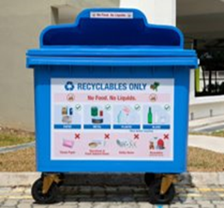
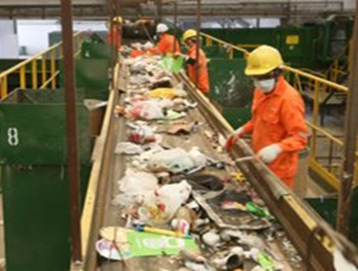
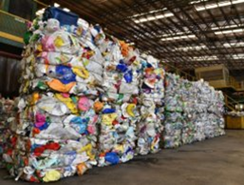
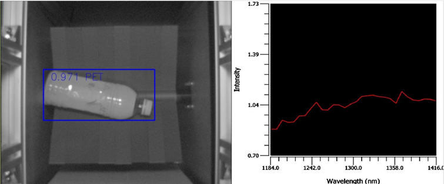

Plastics waste is one of the largest waste streams due to increasing generation and low recycling rate (6%).
Under Singapore Zero Waste Masterplan, we aim to achieve 70% overall recycling rate by 2030, through various measures to improve both the domestic and non-domestic recycling rate.
Lack of effective plastic waste sorting technologies is one key factor that inhibits the recycling rate.
“Before we can recycle many plastics, they must be sorted into separate streams.”
A. Mehta. The plastic sorting challenge. Chemistry World. 2020.
(Published by Royal Society of Chemistry)

1. RECYCLABLES ARE THROWN INTO BINS
2. WASTE TRANSPORTED TO MATERIALS RECOVERY FACILITY

3. MANUAL WASTE SORTING
Tedious
Health risk

4. MATERIALS SORTED AND BALED FOR SHIPMENT
Where the inefficiency happens
We want to address the inefficiencies and save costs in the current plastic waste sorting system by transforming plastic waste sorting into an automated and effective procedure via the usage of multi-spectral AI technologies.
What Hypersense Offers
Hypersense AI is an AI model trained to work with multi-spectral cameras to carry out material classification at high speeds and accuracy.
Key advantages
High Accuracy
High accuracy material detection rate of 96% (Outstanding accuracy)
Advantage 2
Achieves >90% reduction of labeled data, average use of ~200 data samples.
Advantage 3
Overcomes limitations of traditional contact-based methods through use of HSI technology.
Technology modules
AUTOMATIC PLASTIC RESIN SORTING
It is ideal to separate different types of plastic for further processing. Our technology is able to differentiate between different types of plastic with high accuracy along the trash processing line.

CLEAN/DIRTY BOTTLE CLASSIFICATION
Contaminated bottles are not valuable for recycling. Our technology differentiates between clean and dirty bottles with high accuracy, without impacting throughput efficiency.
Video
Why us
Our team
Specialized research team focused on research and development.
Partners
Collaboration with Singapore Material Recovery Facility and A*Star.
IP
SG Provi No. 10202403031Y, International Application No. PCT/SG20025/050629.
Versatility
Technology can be applied to other industries that utilize material classification.
Benefits
Reduction in labour costs, increased production efficiency.
How much do we save?
A quick look at statistics from Singapore’s Market.
Example savings framing
The estimated load of plastic waste per year assuming a 50% recycling rate is about 144,818,500 items. With manual sorting, assuming a worker takes 5s to sort an item, they will be able to handle 720 items an hour.
To handle a year’s worth of plastic items at the Singapore Material Recovery Faciilty, we need approximately 104 staff, which costs up to $312,000 per month assuming a wage of $3,000.
Our vision of a fully automated system using dozens of AI-driven robotic arms and other automation components can handle the same workload for a much lower cost, allowing us to save up to $150,000 per month.
Who are we looking for?
Partners
We are looking for partners willing to work with us and create new products that use our AI model.
Benefits follow revenue models shown.
Shareholders
We are looking for shareholders willing to invest in our company to provide funding to carry out further research and development to improve on our product.
Revenue model
Subscription Model
Collaborators subscribe to our model on a monthly or yearly basis to use its functions for their own requirements in products or tasks.
Revenue Share Model
We provide the AI model and the service, while working together with collaborators to create a product and share the revenue between both parties.
Licensing Model
License out our patented AI model to collaborators who wish to use it to create their own products.
Interested in collaborating?
Placeholder: Email us at Please give me an email to put here